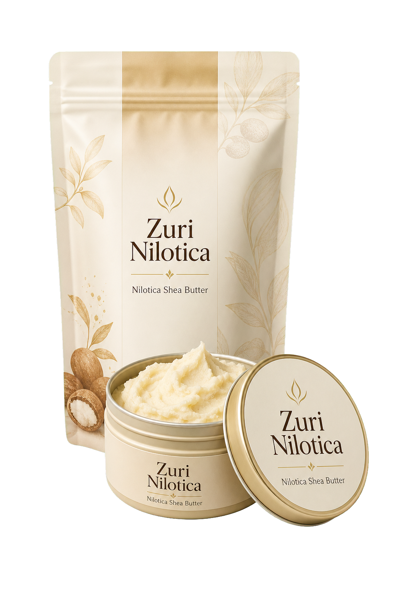

Dry skin
Use after bathing or handwashing to soften dry areas and help lock in moisture.
100% Ugandan Nilotica Shea Butter

One ingredient, many uses: a soft, creamy Ugandan Nilotica shea butter for dry skin, hands, heels, lips, hair ends, and protective styles.
Why buyers choose it
Nilotica shea butter is naturally creamy and easy to warm between the palms. A small amount helps soften rough areas and seal in moisture without a complicated routine.
It feels softer and silkier than many heavier shea butters, which makes it easier to use every day on both skin and hair.
Buy nowUse after bathing or handwashing to soften dry areas and help lock in moisture.
Warm a trace amount and smooth over dry hair ends, braids, or protective styles.
Apply to heels, elbows, knees, and cuticles as needed.
How to use
Start with a small amount. Warm it between clean palms until it softens, then press into skin or smooth over dry areas.
For best results, apply after bathing while skin is slightly damp. Store cool and closed. Natural texture may change with temperature.
Buy on AmazonFull ingredients
No added fragrance, filler, petroleum, mineral oil, parabens, artificial color, or unnecessary extras.
Natural shea butter may soften in heat or firm in cooler temperatures. That texture shift is normal and does not change the quality of the butter.

Why the source matters
Every jar begins with Nilotica shea trees, careful nut collection, natural drying, and simple handling. That source is part of why the butter feels soft, rich, and easy to apply.
Read sourcing storyRooted in Uganda's East African shea-growing region and Nile Basin story.
Without the shea tree, there is no butter. Protecting the source protects future harvests.
100% Nilotica shea butter. No fragrance, filler, petroleum, or artificial color.